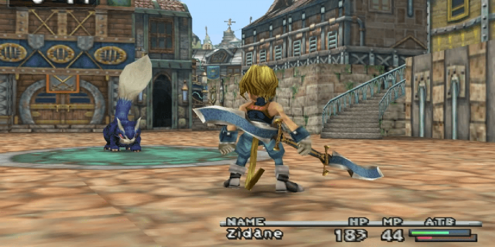
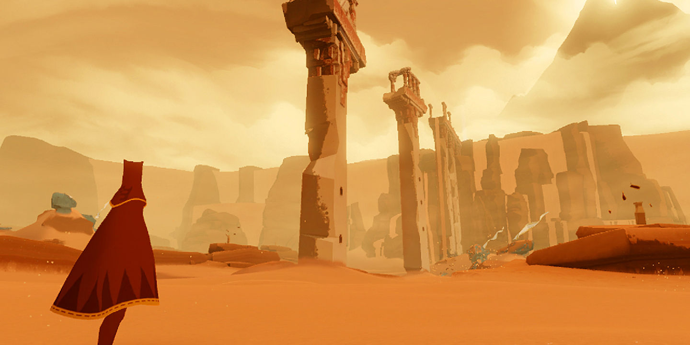
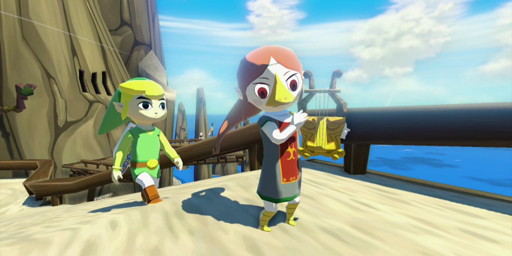
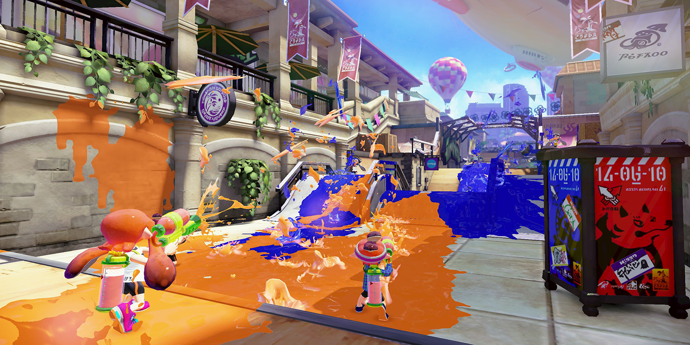

Final Fantasy IX
- Released: 2000
- Publisher: Square
- Director: Hiroyuki Ito
- Platforms: Playstation, iOS, Android, Microsoft Windows
- Genre: Roleplaying
Released in 2000 and one of Squaresoft's last ventures before they became Square-Enix, Final Fantasy IX was the final PS1 entry in the Final Fantasy series. It took a drastic departure from the two games that preceded it and returned the game to its more traditional fantasy roots while still paying homage to the games that came before it.
Final Fantasy IX was my first Final Fantasy; I was immediately attracted to the characters, whose personal journeys of identity, acceptance, and love were each showcased in turn as the overarching story progressed. The final boss is, admittedly, a let-down, but--in true "journey before destination" form--the game itself is too fun to allow one fight to define it.
This game also introduced me to the works of Nobuo Uematsu (植松 伸夫) and it's now rare that a day goes by without me listening to something he's written. I was fortunate enough to meet him in Chicago as part of a limited-access version of Distant Worlds. He's truly an amazing person.
Journey
- Released: 2012
- Developer: thatgamecompany
- Director: Jenova Chen
- Platforms: Playstation 3, Playstation 4
- Genre: Adventure, Art
I was enamored with Journey long before I could play it. Journey chronicles the journey of an unnamed adventurer from the desert, through an underground cavern, and finally to the summit of a great mountain.
Your character is assisted in their endeavor by a magical scarf that trails from them; this scarf and the glyphs on it allow you to fly, though only temporarily. Your character is wordless save for their ability to sing one glyph. Other creatures--composed of the same material, it seems, as the scarf--come and go, as well as the occasional other traveler if you happen to play online.
This game broke my heart. It's relatively quick--2 to 3 hours takes you from start to finish--but there's a sense of a full life lived in those meager hours. I've recommended Journey to everyone--because everyone will have to confront the possibility of what happens at the end of one's life.
The Legend of Zelda: Wind Waker
- Released: 2003
- Publisher: Nintendo
- Director: Eiji Aonuma
- Platforms: GameCube, Wii U (HD)
- Genre: Action-adventure
In a time when players clamored for the next big Zelda--one that would draw heavily on the style of Ocarina of Time--Wind Waker went relatively unloved. But I couldn't get enough of sailing from one island to the next, the colorful cel-shaded graphics a perfect fit for a journey that was, at its core, about a brother saving his sister.
Link's adventure begins when his sister, Aryll, is snatched away by a gigantic bird (while never explicitly named, it's the fearsome Helmaroc King) to the Forsaken Fortress, a place even the hardiest of pirates avoid. But to Link's fortune, the pirate captain Tetra is prepared to help him rescue his sister. Link and Tetra's destiny, however, are far greater than either of them realizes.
I've lost count of the number of times I've beaten Wind Waker; my time in this game is perhaps second only to the newest Zelda game, Breath of the Wild, in which I've clocked over 140 hours. I'll never get enough of sailing the beautiful oceanic landscape of this game.
Splatoon
- Released: 2015
- Publisher: Nintendo
- Directors: Yusuke Amano, Tsubasa Sakaguchi
- Platforms: Wii U
- Genre: Third-person Shooter
I've never been good at FPS games; aiming with a controller is a chore and I never bothered playing games on my PC (until Overwatch). Splatoon promised some "aim assistance" by use of a gyroscope and an objective that was less about shooting other players and more about covering the world in ink. I was sold. And suddenly I was introduced in great fashion to Splatoon.
Splatoon benefits from having a strong single-player story mode; the game is challenging--sometimes frustrating--but ultimately rewarding, and the music is sublime. (Nintendo excels at music direction, and I'm a sucker for good music.) Once your skills are honed in the single-player campaign, you can try your hand in the online multiplayer mode. Fans derided Nintendo for not including voice chat, but I never found it necessary.
Perhaps the best part of Splatoon was the fact that the game received continuous updates after launch--and these updates were free! Splatoon became an incredible value, supported both by Nintendo and by the fans who came to love playing as a kid. Or a squid? Both!
Okami

- Released: 2006
- Developer: Clover Studio
- Director: Hideki Kamiya
- Platforms: Playstation 2, Playstation 3, Wii
- Genre: Action-adventure
Japanese mythology is impossibly rich and complicated; characters like Susanoo, Yamato-no-Orochi, and Amaterasu are well-known, but perhaps only thanks to this game, where you play Amaterasu herself. However, Amaterasu is trapped in wolf form, unable to harness her full powers, and aided only by her tail and her traveling artist companion Issun.
The whole of the game is presented as though painted on a scroll; the art direction for this game is so strong, and the music further supplements the feeling as though you're creating the legends yourself with Ammy's help. A combat system revolving around "painting" shapes adds a depth to battles that brings players back over and over. (Or it could be the numerous collectables, scattered across fictional Nippon, that unlock special items for the New Game Plus experience.)
I played Okami when it was ported to the Wii; I couldn't imagine drawing with the PS2's joysticks. While the controls were occasionally frustrating, it was immensely satisfying to draw a circle around a tree and watch it burst into bloom. It's a game I probably couldn't play endlessly--in fact, I tried one time, and everything turned into sumi-e blurs until I took a nap--but it's worth revisiting when I want to embrace being the sun goddess.